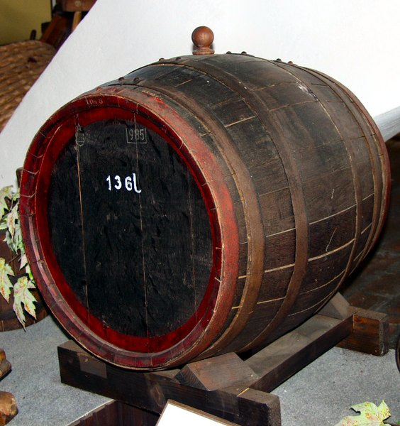

A legkisebb a meszely, amely fél iccével volt egyenlő, azaz valamivel több, mint négy deciliter. Ennél kisebb ivóedény nem létezett a kocsmákban... Erről a mértékegységről kapta a nevét az ugyanekkora mérető agyagkorsó.
A kétmeszelynyi icce nagysága területenként változó: általában 8,5 deci körül volt - a magyar icce egészen pontosan 848 mililiter - de az erdélyi icce ennél kisebb, körülbelül hét deci. Közismert történet a részeges cinkotai kántorról, aki Mátyás királytól azt kérte jutalmul, hogy náluk legyen az icce kétszer akkora, mint máshol. Meg is kapta ezt a királyi kegyet, és csak akkor döbbent meg, amikor a nagyiccéért a kocsmáros kétszer annyi pénzt kér, mint a kisiccéért - mert bizony azt elfelejtette kérni a királytól a feledékeny kántor, hogy a nagyicce ára legyen ugyanannyi, mint a kisiccéé...
A nagyság szerinti sorban a latin 'jelzett', vagyis pinctu szóból eredő pint következik, ami négy meszellyel, vagyis két iccével azonos - tehát körülbelül 1,7 liter.
A köböl rendkívül változó, területenként 12 litertől akár 42 literig bármekorra lehetett: az eredetileg 'faedényt' jelentő cseber pedig ötven vagy száz iccét tartalmazott, attól függően, hogy kiscseberről, vagy nagycseberről volt szó.
Zsong már a fejük? Pedig még nem volt szó a mérő, a kanta, az átalag, a fertály, a szapu és a kupa jelentéséről, de az akó semmiképpen nem maradhat ki, hiszen ezzel mérték a hordók nagyságát. Országoktól, sőt városoktól és történelmi koroktól függően 50 és 54 liter közötti mennyiség lehetett egy akó, hiszen csak azt határozták meg, hogy egy magyar akó 64 iccel, azaz 32 pint legyen - de bizony területenként a pintnyi bor mennyisége is eltérő lehetett. Mindenesetre Hegyalján a száz liternél, vagy egy hektónál kisebb, ám fél hektónál nagyobb hordókat mai is akós hordónak hívják; de persze a legismertebb tokaji mértékegység a gönci hordó, amelybe 160 icce, vagyik 136 liter aszúbor fér el.
| AZ ŰRMÉRTÉK | ||||
| MAGYAR NEVE | LATIN NEVE | NÉMET NEVE | ÁTVÁLTÁSA | ÁTLAGOS ÉRTÉKE MAI MÉRTÉKEGYSÉGBEN |
| akó | urna | Eimer | 1 akó = 40 pint | 58 liter |
| butélia | 6 deciliter | |||
| csöbör | cibrio tina |
Zuber | 1 csöbör = 33, 36, 40, 50, 60 icce (tájegységenként változik) |
5-200 liter |
| dézsa | 1 dézsa = 10-48 icce (tájegységenként változik) |
8-38 liter | ||
| fertály | quartale | Viertel | 14 liter | |
| hordó | tunella vasa |
Fäss |
1 gönci hordó = 240-420 icce |
200-452 liter |
| icce | justa media |
Halbe | 1 icce = 2 meszely | 7-8 deciliter |
| kanta | canta | 8 deciliter | ||
| kila | cila | 1 bácsi kila = 3 pozsonyi mérő | 140 kilogram (gabona) | |
| köböl | cubulus | Kübel | 10-25 liter (bor) 50-90 kilogramm (gabona) (tájegységenként változik) |
|
| kupa | octal | Achtel | 1,4 liter | |
| meszely | sextarius quartalia |
Seitel | 1 meszely = 2 römpöly | 3,5-4 deciliter |
| mérő | metreta | Metz | 40 kilogramm (gabona) | |
| pint | pinta | Pinte Achtring |
1 pint = 2 icce | 1,5 liter |
| römpöly | Rimpel | 1,7-2 deciliter | ||
| szapu | scaphium | 25-50 kilogramm (gabona) (tájegységenként változik) |
||
| véka | canistrum modius |
Vierdung | 15-25 kilogramm búza (tájegységenként változik) |
|
| vödör | hydria | Eimer | 10-15 liter | |